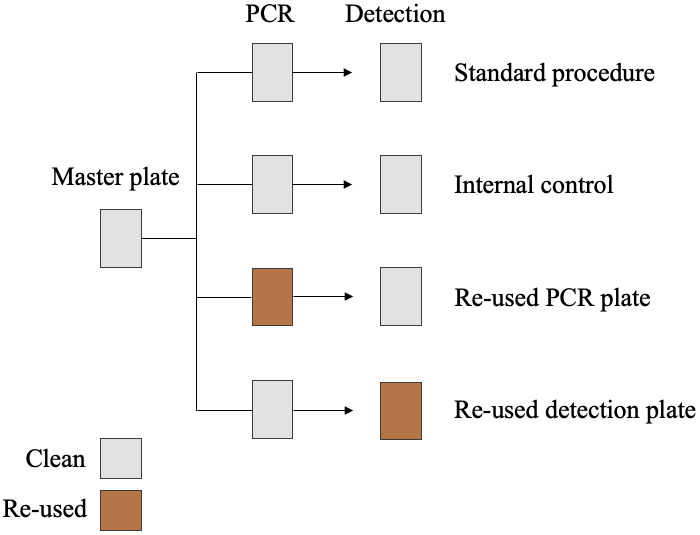

Sustainable genetics project
1 Description
Scientific research is a massive endeavor, consuming vast quantities of single-use plastics. The sustainable genetics project aim to empirically test the re-usability of lab plastic wear, specifically the plastic racks used for PCRs and detection. The project was based around the protocol for Antarctic fur seal genotyping using microsatellites. In this protocol, extracted DNA is first amplified using PCR and since transfered to detection plates for sequencing. The plates used for detection contain only a small diluted concentration of DNA, while the PCR plates have been used in the PCR process and therefore contain a high concentration of DNA. Therefore, we assume that the potential risk of contamination from a previously used plate would be higher in the PCR step.
2 Methods
The 274 samples were collected from Bird Island, South Georgia (54°00024.800 S, 38°03004.100 W) during the austral summer of 2020-2021. Tissue samples were collected from the flipper or umbilical cord of Antarctic fur seal pups and stored in 20% dimethyl sulphoxide saturated with sodium chloride at -20°C. The DNA was extracted using a standard chloroform-isoamylalcohol protocol and genotyped at 39 microsatellite loci. PCR amplification was performed using a Type It Kit (Qiagen) with the following program:
| Stage | No. of cycles | Temperature (°C) | Duration | Process |
|---|---|---|---|---|
| 1 | 1 | 94 | 5 minutes | Heat up |
| 2 | 28 | 94 | 30 seconds | Denaturation |
| 60/53 | 90 seconds | Annealing | ||
| 72 | 30 seconds | Extension | ||
| 3 | 1 | 60/53 | 30 minutes | Annealing |
| 4 | 1 | 10 | hold | Cool down |
Note: Annealing temperatures are mastermix-specific.
The PCR product was transferred to and diluted on detection plates before being resolved by electrophoresis on an ABI 3730xl capillary sequencer (Applied Biosystems, Waltham, MA, USA). Allele sizes were scored automatically using GeneMarker v. 2.6.2 (SoftGenetics, LLC., State College, PA, USA) and manually inspected and corrected when necessary. Each plate contains three positive controls to ensure standardisation of microsatellite scoring across plates.
To assess the re-usability of both PCR plates and detection plates, the samples were placed on a master plate from which the samples were transferred to PCR plates. The samples were distributed on a total of 3 master plates. The samples were subjected to four treatments: standard procedure, internal control, re-used PCR plate and re-used detection plate. This is illustrated by Figure 1. The re-used plates all originated from the ‘standard procedure’ round. Thereby, we could ensure knowledge of the sample previously contained within a specific well.

2.0.1 Data
Description of the data